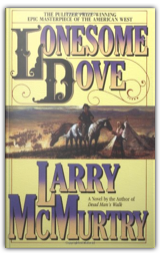

|
The Berlin-Baghdad Express: The Ottoman Empire and Germany's Bid for World Power
Sean McMeekin

The modern Middle East was forged in the crucible of the First World War, but few know the full story of how war actually came to the region. As Sean McMeekin reveals in this startling reinterpretation of the war, it was neither the British nor the French but rather a small clique of Germans and Turks who thrust the Islamic world into the conflict for their own political, economic, and military ends.

Lonesome Dove
Larry McMurtry
A love story, an adventure, and an epic of the frontier, Larry McMurtry’s Pulitzer Prize— winning classic, Lonesome Dove, the third book in the Lonesome Dove tetralogy, is the grandest novel ever written about the last defiant wilderness of America. Journey to the dusty little Texas town of Lonesome Dove and meet an unforgettable assortment of heroes and outlaws, whores and ladies, Indians and settlers. Richly authentic, beautifully written, always dramatic, Lonesome Dove is a book to make us laugh, weep, dream, and remember.
The philosophy of Friedrich Nietzsche
H. L. Mencken
This volume is produced from digital images created by the Internet Archive for The University of Toronto Libraries. The Internet Archive and The University of Toronto Libraries seek to preserve the intellectual content of items in a manner that facilitates and promotes a variety of uses. The digital reformatting process results in an electronic version of the original text that can be both accessed online and used to create new print copies. To enhance your reading pleasure, HP.s patented BookPrep technology is used to clean and remove aging as well as scanning artifacts. This book and hundreds of thousands of others can be found at http://www.bookprep.com. To view the University of Toronto Libraries catalogue, please visit http://discover.library.utoronto.ca/catalogue/
H.L. Mencken: Prejudices: The Complete Series
H.L. Mencken, Marion Rodgers
Few writers roiled the American cultural scene like Henry Louis Mencken. Pathbreaking journalist, trenchant social observer, and unbridled humorist, Mencken was the most provocative and influential cultural critic of the last century. To read him today is to be plunged into an era whose culture wars were easily as ferocious as our own, in the company of a writer of boundless curiosity and vivacious frankness. In the six volumes of Prejudices published between 1919 and 1927, Mencken attacked what he felt to be American provincialism and hypocrisy, and championed writers and thinkers he saw as harbingers of a new candor and maturity. Laced with savage humor and delighting in verbal play, Mencken's prose remains a one-of-a-kind roller coaster ride over a staggering range of thematic territory: literature and journalism, politics and religion, sex and marriage, food and drink, music and painting, the absurdities of Prohibition and the dismal state of American higher education, and the relative merits of Baltimore and New York. Now, The Library of America restores the full text of Mencken's landmark work to print in a deluxe two- volume boxed set, ensuring that new generations of readers can rediscover his one-of-a-kind genius.
The Ornament of the World: How Muslims, Jews and Christians Created a Culture of Tolerance in Medieval Spain
Maria Rosa Menocal
Widely hailed as a revelation of a "lost" golden age, this history brings to vivid life the rich and thriving culture of medieval Spain where, for more than seven centuries, Muslims, Jews, and Christians lived together in an atmosphere of tolerance, and literature, science, and the arts flourished. of photos. 3 maps.
Areopagitica
John Milton
This Elibron Classics book is a facsimile reprint of a 1868 edition by Alex. Murray & Son, London.
The American Way of Death Revisited
Jessica Mitford
"Mitford's funny and unforgiving book is the best memento mori we are likely to get. It should be updated and reissued each decade for our spiritual health."—The New York Review of Books
The Cleanest Race: How North Koreans See Themselves and Why It Matters
B.R. Myers
Understanding North Korea through its propaganda
Reading Lolita in Tehran
Azar Nafisi
For two years before she left Iran in 1997, Azar Nafisi gathered seven young women at her house every Thursday morning to read and discuss forbidden works of Western literature. They were all former students whom she had taught at university. Some came from conservative and religious families, others were progressive and secular; several had spent time in jail. Shy and uncomfortable at first, they soon began to open up and speak more freely, not only about the novels they were reading but also about themselves, their dreams and disappointments. Their stories intertwined with those they were reading - "Pride and Prejudice", "Washington Square", "Daisy Miller" and "Lolita" - their Lolita, as they imagined her in Tehran. Nafisi's account flashes back to the early days of the revolution when she first started teaching at the University of Tehran amid the swirl of protests and demonstrations. In those frenetic days, the students took control of the university, expelled faculty members and purged the curriculum. Azar Nafisi's luminous tale offers a portrait of the Iran-Iraq war viewed from Tehran and gives us a glimpse, from the inside, of women's lives in revolutionary Iran. |
 Made with Delicious Library
Made with Delicious Library
Springfield, VA zipflap congrotus delicious library Fogus, Michael